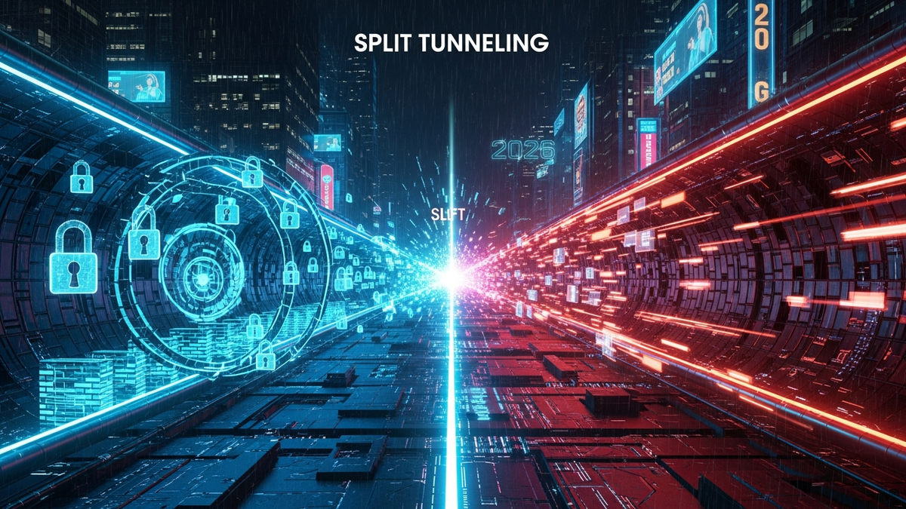

In an increasingly interconnected and threat-laden digital landscape, the perpetual tug-of-war between robust cybersecurity and uncompromised network performance has reached a critical juncture. As we plunge deeper into 2026, with hybrid work models firmly entrenched and the volume of data traffic exploding across diverse networks, organizations and individual users alike are confronting the stark reality that traditional "all or nothing" security paradigms often introduce unacceptable friction. The demand for seamless, high-speed access to a myriad of cloud services, local resources, and global content, all while maintaining an ironclad defense against sophisticated cyber threats, is no longer a luxury but a fundamental necessity. This delicate equilibrium is precisely where the concept of split tunneling emerges as a powerful, albeit nuanced, solution. Far from a simple toggle, split tunneling represents a sophisticated strategy for intelligently managing network traffic, allowing certain data streams to traverse a secure Virtual Private Network (VPN) tunnel while others bypass it entirely, heading directly to the internet. This intelligent discrimination is the key to unlocking a future where security doesn't automatically equate to sluggishness, and speed doesn't inherently invite vulnerability. Understanding its mechanics, benefits, risks, and the advanced solutions available in the current technological climate is paramount for anyone aiming to navigate the complexities of digital security and performance in the mid-2020s.
The year 2026 presents a digital landscape dramatically reshaped by a confluence of technological advancements, evolving work paradigms, and an ever-escalating threat environment. The shift towards pervasive hybrid and remote work, catalyzed by events earlier in the decade, has solidified into a permanent fixture for countless organizations globally. This fundamental change means that corporate perimeters have dissolved, replaced by a distributed tapestry of home networks, co-working spaces, and public Wi-Fi hotspots, each presenting its own unique set of vulnerabilities. Users are no longer confined to secure office networks, and their devices frequently toggle between personal and professional use, blurring the lines of digital responsibility. This decentralization of the workforce inherently strains traditional network architectures, particularly legacy VPN solutions designed for an era where most employees connected from a central office. Expecting every byte of traffic from a remote worker's device to traverse a corporate VPN tunnel, regardless of its destination or sensitivity, has become an inefficient and often impractical approach. It introduces significant latency, bottlenecks VPN servers, consumes excessive bandwidth, and ultimately degrades the user experience, leading to productivity dips and user frustration.
Beyond the operational challenges of remote work, the threat landscape itself has become exponentially more sophisticated. Artificial intelligence and machine learning are no longer just defensive tools; they are increasingly weaponized by threat actors to craft highly convincing phishing attacks, develop advanced malware, and orchestrate complex, multi-stage cyber assaults that can evade traditional detection methods. The rise of IoT devices, from smart office equipment to personal wearables, has expanded the attack surface dramatically, creating myriad entry points for malicious actors. Furthermore, the increasing reliance on cloud-native applications and Software-as-a-Service (SaaS) platforms means that a significant portion of business-critical data resides outside the traditional corporate network, often accessed directly over the internet. Routing all this cloud-bound traffic through a VPN back to a central data center, only for it to then egress to the cloud, is an illogical and performance-crippling "hairpinning" maneuver. Compliance regulations, such as GDPR, CCPA, and industry-specific mandates, continue to tighten, placing immense pressure on organizations to demonstrate rigorous data protection, even in highly distributed environments. The emergence of early quantum computing research, while not an immediate threat to current encryption standards, hints at a future where cryptographic resilience will require constant innovation. In this complex and dynamic environment, the imperative to balance robust security with uncompromising speed is not merely a technical challenge but a strategic business imperative. Organizations that fail to adapt their network security strategies to these realities risk falling behind, facing compromised data, operational inefficiencies, and significant financial repercussions. Split tunneling, when implemented thoughtfully, offers a compelling pathway to achieving this critical balance, allowing for intelligent traffic management that respects both the need for speed and the non-negotiable demand for security in 2026 and beyond.
At its core, split tunneling is a networking concept that intelligently divides internet traffic, allowing some data to pass through a secure Virtual Private Network (VPN) tunnel while simultaneously permitting other traffic to bypass the VPN and connect directly to the public internet. This contrasts sharply with a "full tunnel" VPN configuration, where all outbound and inbound network traffic from a user's device is routed through the encrypted VPN tunnel, regardless of its destination or sensitivity. The fundamental objective of split tunneling is to optimize network performance and resource utilization without entirely compromising security, offering a nuanced approach to managing diverse traffic streams.
To understand its mechanics, consider a user connected to a VPN. In a full tunnel scenario, when this user attempts to access a local network printer, browse a public website, or connect to a corporate resource, all these requests are first encapsulated, encrypted, and sent to the VPN server. The VPN server then decrypts the traffic and forwards it to its intended destination. The response follows the reverse path, back through the VPN server, then to the user. While highly secure, this process introduces latency and consumes significant bandwidth on both the user's local network and the VPN server. Split tunneling circumvents this by creating a distinction. When a user initiates a connection, their operating system's network stack, often augmented by the VPN client software, consults its routing tables. These routing tables are dynamic lists of rules that dictate how network packets should be forwarded based on their destination IP address. With split tunneling enabled, specific rules are added to these tables.
There are typically two main approaches to split tunneling:
The implementation of these rules can occur at various points:
The underlying mechanism involves the manipulation of network routing. When a user's device initiates a connection, the VPN client intercepts the request. Based on its configured rules (e.g., destination IP, application ID, port number), it determines whether to encapsulate the traffic within the encrypted VPN tunnel or allow it to use the device's default network interface to reach the internet directly. This intelligent decision-making process, often transparent to the end-user, is what allows organizations to fine-tune the balance between security, speed, and resource efficiency. Proper configuration is paramount, as errors can inadvertently expose sensitive data or undermine the very security posture the VPN aims to provide.
The strategic implementation of split tunneling in 2026 offers a compelling suite of benefits that directly address the multifaceted challenges of modern distributed workforces and complex digital ecosystems. These advantages extend far beyond mere convenience, impacting operational efficiency, cost-effectiveness, and the overall user experience in profound ways. By intelligently segmenting network traffic, organizations can achieve a delicate yet powerful balance between robust security and uncompromised performance, a critical differentiator in today's competitive landscape.
One of the most immediate and tangible benefits of split tunneling is a significant improvement in network speed and reduced latency. In a full-tunnel VPN setup, every piece of data, from a sensitive corporate document to a simple web search for local weather, must travel through the VPN server. This often means data may traverse thousands of miles to a centralized VPN gateway, only to then travel back to a local or regional internet resource. This "hairpinning" effect introduces unnecessary hops, increasing latency and slowing down internet access for non-VPN-bound traffic. With split tunneling, traffic deemed non-sensitive or destined for local resources (like printing to an office printer or accessing a local file server) can bypass the VPN entirely, routing directly to its destination. This dramatically reduces the round-trip time for such traffic, leading to a snappier, more responsive internet experience for users. For applications that are highly sensitive to latency, such as video conferencing, real-time collaboration tools, or even basic web browsing, this performance boost can be the difference between a productive workflow and frustrating delays, directly impacting employee satisfaction and efficiency.
Beyond speed, split tunneling offers substantial advantages in resource management and cost optimization. By directing only essential, sensitive traffic through the VPN, the overall load on VPN servers is significantly reduced. This translates into several direct benefits:
Finally, split tunneling provides enhanced access control and flexibility, particularly crucial in complex enterprise environments. It allows users to simultaneously access both secure corporate network resources and local network devices or public internet services without constantly connecting and disconnecting from the VPN. For example, an employee might need to access a cloud-based CRM system (routed through the VPN for security) while also needing to print a document to their home office printer (routed directly). Without split tunneling, this would require a cumbersome process of disconnecting from the VPN to print, then reconnecting to access corporate resources, disrupting workflow and increasing the risk of accidental security lapses. Furthermore, split tunneling can facilitate access to geo-restricted content or services that might be blocked by the corporate VPN's egress point, while still maintaining a secure connection to internal corporate applications. This granular control over traffic flow empowers IT administrators to define precise policies, ensuring that only necessary traffic is subjected to the overhead of VPN encryption, while other traffic benefits from direct access. This flexibility is critical for supporting diverse user needs and application requirements in the dynamic digital landscape of 2026, fostering a more productive and less restrictive computing environment without compromising on the fundamental tenets of cybersecurity.
While split tunneling presents compelling advantages for balancing security and speed, its implementation is not without significant risks, particularly if not meticulously planned, configured, and managed. The very nature of allowing some traffic to bypass the secure VPN tunnel inherently introduces potential vulnerabilities that, if overlooked, can severely compromise an organization's overall security posture. In 2026, with the sophistication of cyber threats continually evolving, understanding and mitigating these risks is paramount for any organization considering or currently utilizing split tunneling.
Humanize your text and bypass any AI detector instantly with Undetectable AI.
BYPASS AI DETECTION NOWThe primary and most critical risk associated with split tunneling is the creation of security gaps and potential for data exposure. Any traffic that is explicitly or implicitly allowed to bypass the VPN tunnel is unencrypted and travels over the public internet without the protection of the corporate security policies enforced by the VPN gateway. This unencrypted traffic becomes vulnerable to various attacks, including:
Another significant concern revolves around policy enforcement and compliance issues. In a full-tunnel environment, all traffic is subject to the same set of security policies, making compliance easier to manage and audit. With split tunneling, IT administrators must meticulously define and enforce policies for two distinct traffic streams, which adds complexity. Inconsistent or poorly defined policies can lead to compliance violations, especially concerning data privacy regulations (e.g., GDPR, HIPAA) if sensitive data is inadvertently routed outside the secure tunnel. Proving compliance in an audited environment becomes more challenging when traffic flows are bifurcated and less uniformly protected. The sheer volume of diverse network traffic in 2026, coupled with the increasing complexity of regulatory frameworks, makes this a particularly acute challenge.
Perhaps the biggest practical risk factor is misconfiguration. Split tunneling configurations can be intricate, requiring precise rules based on IP addresses, domain names, application IDs, or even user groups. A single error in these rules – a forgotten IP range, an incorrectly whitelisted domain, or an outdated policy – can inadvertently expose critical data or create a wide-open backdoor for attackers. Administrators might mistakenly allow an entire application or service to bypass the VPN, unaware that it handles sensitive data. Furthermore, maintaining these configurations across a large, dynamic network of endpoints and applications is an ongoing challenge, requiring constant vigilance and updates. The human element, therefore, plays a crucial role in mitigating or exacerbating these risks.
Finally, there's the risk of "shadow IT" and user circumvention. If split tunneling policies are too restrictive or poorly communicated, users may find their own ways to bypass the VPN entirely to access certain services or improve performance, thereby creating even larger security gaps outside the IT department's knowledge or control. This highlights the importance of user education and a balanced approach to policy enforcement. In essence, while split tunneling offers undeniable performance benefits, it transforms the security perimeter from a clear, centralized boundary into a more porous, distributed one. This necessitates a more sophisticated, granular, and continuous approach to security monitoring, policy management, and threat detection, moving towards a Zero Trust model where every connection, regardless of its tunnel status, is continuously verified and authorized.
Implementing split tunneling effectively in 2026 requires a strategic, multi-layered approach that prioritizes security while still leveraging the performance benefits. It's not merely about enabling a feature; it's about meticulously defining policies, continuously monitoring traffic, and integrating the solution within a broader cybersecurity framework. Without careful planning and execution, the risks associated with split tunneling can easily outweigh its advantages. The following best practices are crucial for organizations seeking to balance security and speed in today's complex digital environment.
First and foremost, adopt a principle of granular control and least privilege. Instead of broadly excluding categories of traffic, focus on including only the absolutely necessary traffic through the VPN (inverse split tunneling). This "whitelist" approach is inherently more secure, as anything not explicitly permitted to bypass the VPN is, by default, routed securely. Policies should be application-specific, domain-specific, or even port-specific, rather than relying solely on broad IP ranges. For instance, instead of allowing all traffic to a specific cloud provider to bypass the VPN, specify only the public-facing URLs or IP ranges for non-sensitive services, ensuring that administrative interfaces or sensitive data transfers still go through the tunnel. This level of granularity requires a deep understanding of application traffic patterns and dependencies.
Secondly, establish clear, well-documented security policies and guidelines. Before deploying split tunneling, organizations must meticulously define what constitutes "sensitive" and "non-sensitive" traffic. This involves a comprehensive data classification exercise to identify which data absolutely requires VPN protection and which can safely traverse the public internet directly. These policies should be formally documented, regularly reviewed, and communicated effectively to both IT staff and end-users. The policy should address scenarios like accessing local network resources (printers, shared drives), streaming services, personal web browsing, and specific SaaS applications. Clear guidelines help prevent misconfigurations and ensure consistent application of security rules across the organization.
Thirdly, implement robust endpoint security and continuous monitoring. Since split tunneling allows some traffic to bypass the corporate security perimeter, the security of the endpoint device itself becomes paramount. Every device utilizing split tunneling must be equipped with advanced endpoint detection and response (EDR) solutions, next-generation antivirus, personal firewalls, and regular vulnerability management. Furthermore, comprehensive logging and monitoring of network traffic, both VPN-bound and direct, are essential. Security information and event management (SIEM) systems should ingest logs from VPN clients, firewalls, and network devices to detect anomalous behavior, potential IP leaks, or unauthorized traffic patterns that might indicate a security breach or misconfiguration. Regular audits of split tunneling configurations and traffic logs are non-negotiable.
Fourthly, integrate split tunneling within a broader Zero Trust Network Access (ZTNA) framework. In 2026, Zero Trust is no longer a buzzword but a foundational security philosophy. Split tunneling, when combined with... and implement these strategies to ensure long-term success.
In summary, staying ahead of these trends is the key to business longevity and security. By following this guide, you maximize your growth and ensure a stable digital future.
Don't wait for the headlines. Our Private Telegram Channel delivers real-time AI security updates and digital wealth strategies before they go viral. Stay protected. Stay ahead.
⚡ JOIN THE 1% NOWNo sign-up required. Instantly check risks, analyze AI text, or calculate your digital finances.